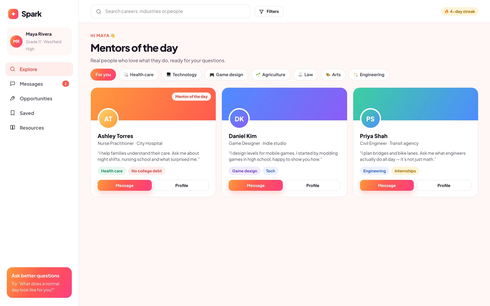
Spark
A career-discovery platform connecting high school students with mentors, teachers and real internships, redesigned to feel young, clear and safe.
Open case study ↗More work
Earlier work and focused explorations across mobile products, responsive services, conversion journeys and visual systems.
Back to selected work
A career-discovery platform connecting high school students with mentors, teachers and real internships, redesigned to feel young, clear and safe.
Open case study ↗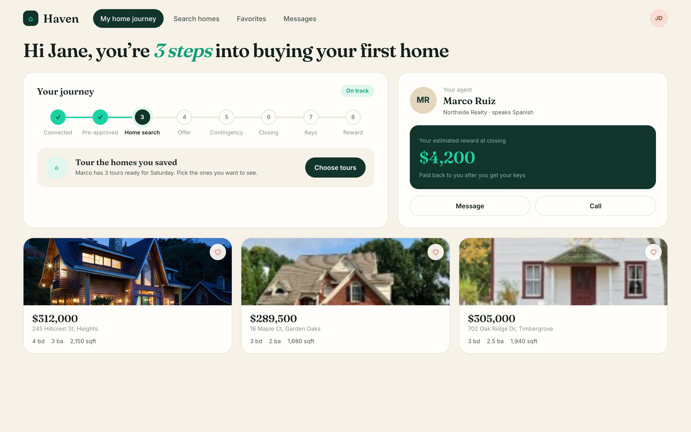
A visual redesign of a real estate platform for renters, agents and admins.
Open case study ↗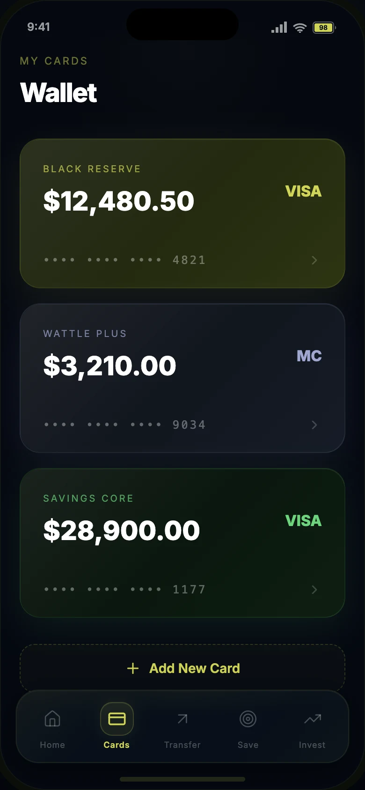
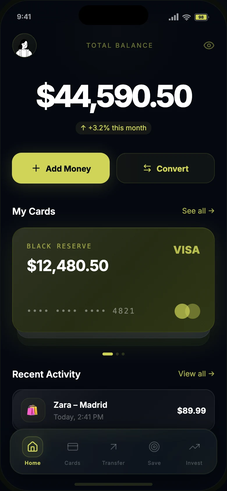
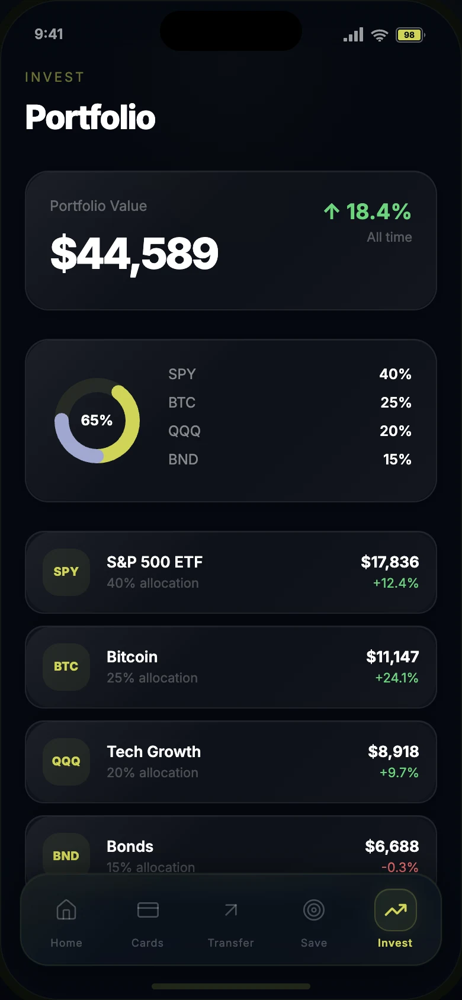
A mobile wallet concept with seven connected flows, shared product state and a working React prototype you can try inside the case.
Open case study ↗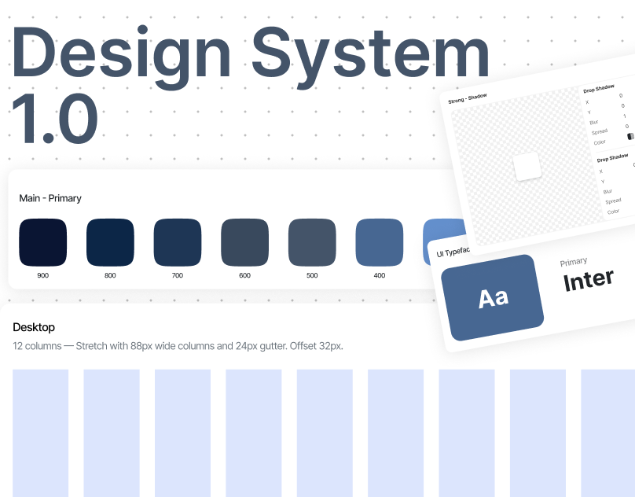
The first iteration: foundations, components and states for a single product. Its successor is Foundry.
Open case study ↗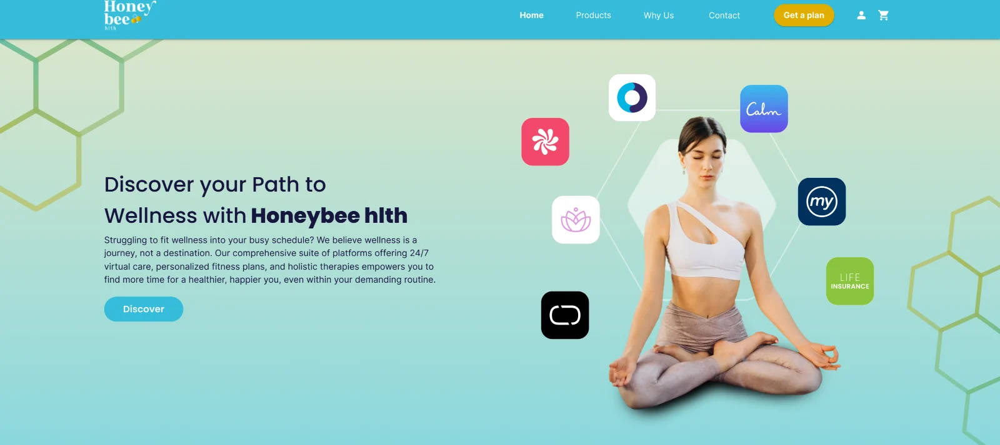
A landing page redesign focused on clearer positioning, responsive hierarchy and conversion-oriented UI decisions.
Open case study ↗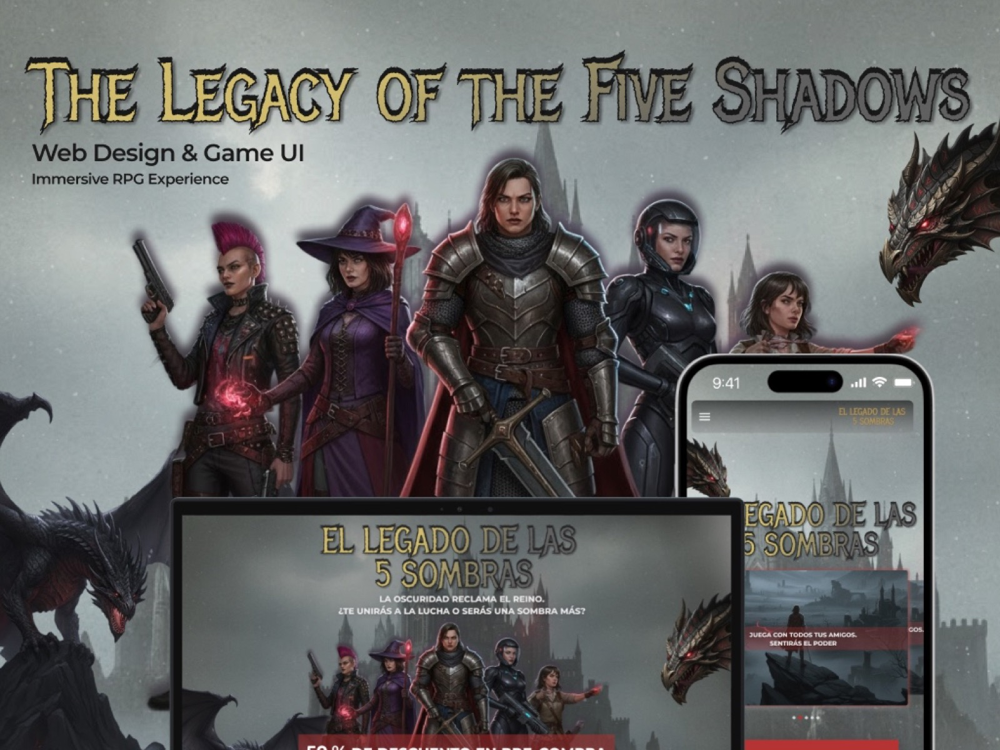
A dark fantasy RPG launch concept focused on conversion, responsive architecture, mobile accessibility and an immersive visual system.
Open case study ↗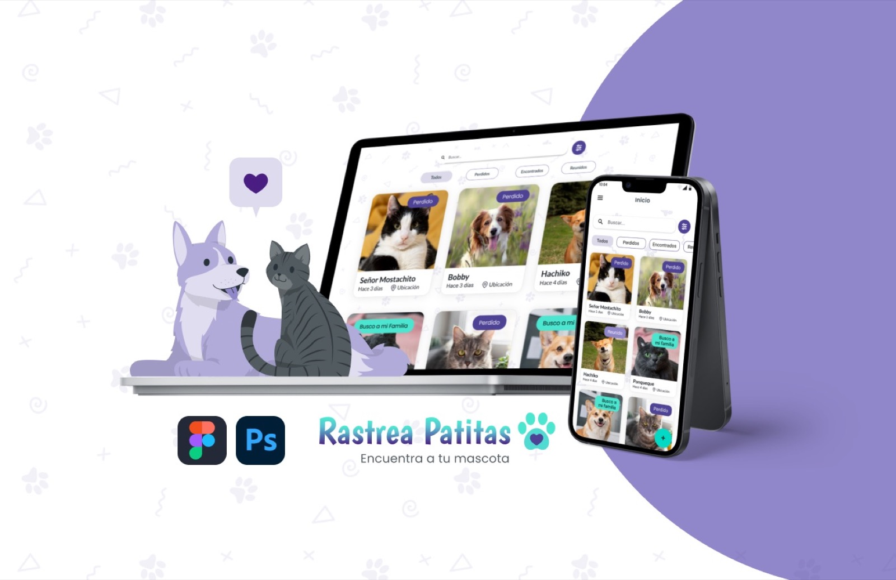
A responsive platform concept for reporting lost pets, creating alerts and helping owners reconnect through QR codes, posters and community-driven search.
Open case study ↗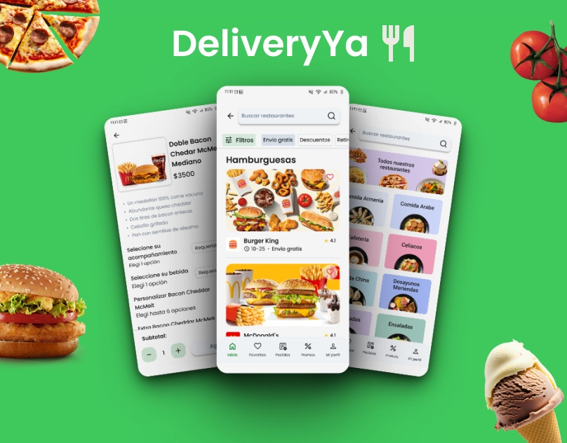
A mobile food delivery concept focused on restaurant discovery, browsing, filters, item customization and a clear ordering flow.
Open case study ↗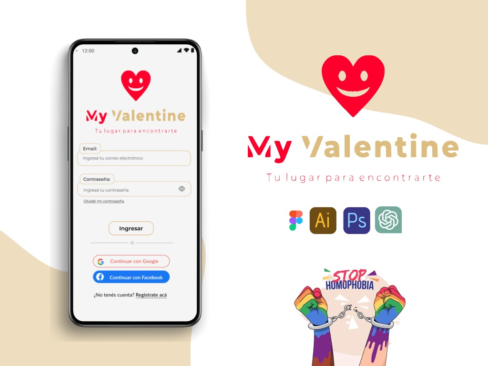
A dating app concept exploring safer digital connection, privacy concerns, onboarding, user flows and a warm mobile visual system.
Open case study ↗